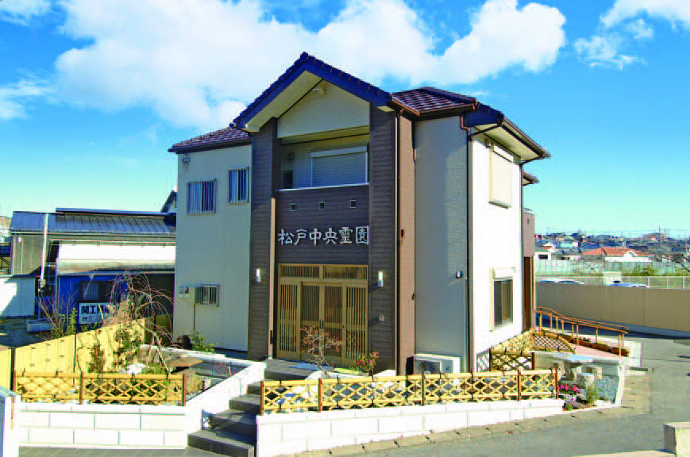
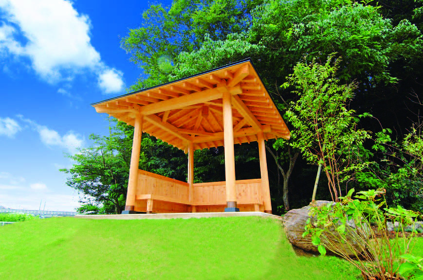
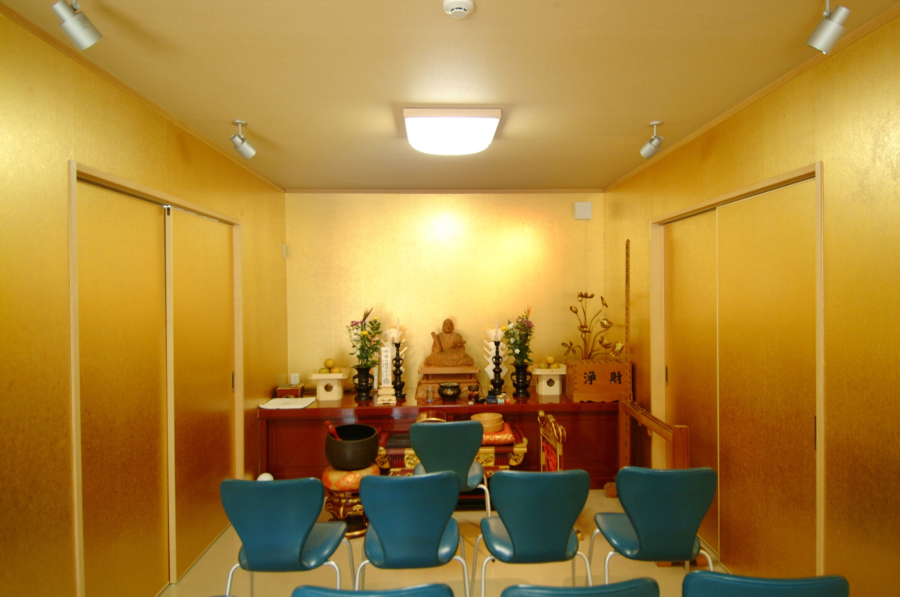

FEATURES
松戸中央霊園が皆さまに選ばれる5つの理由
理由 一
21世紀の森と広場に隣接する極上の緑
松戸市の誇る広大な自然「21世紀の森と広場」に隣接。周囲は驚くほどに静かで、耳を澄ませば一年中様々な小鳥のさえずりが心地よく響きます。四季の移ろいを肌で感じながら、のどやかにお参りしていただける最良の立地です。
 緑豊かな霊園全景
緑豊かな霊園全景
理由 二
創業40年以上の実績、年中無休の管理人常駐
昭和60年の開園から40年以上にわたり、地域に密着して丁寧にお客様をお迎えしております。年中無休で管理人が常駐しているため、お墓の手入れ、お墓参りのサポート、仏事のご質問など、いつでも親身に対応します。

管理事務所棟理由 三
車椅子でも安心、休憩処「あづまや」も完備
園内全体は段差が非常に少なく、通路幅もゆったり確保したフルバリアフリー設計。お疲れになった際にも、いつでも腰を下ろして一息つける和風の「東屋（あづまや）」や、美しく整えられた駐車場を備えています。

休憩処あづまや理由 四
ご法要・お斎（食事）も園内一括で可能
冷暖房を完備した快適な法要施設や和室スペースをご用意しております。他所に移動することなく、お墓参りから法要、ご会食まですべて一箇所で執り行うことが可能です。高齢のご親族が移動する負担も大幅に軽減されます。

法要施設内